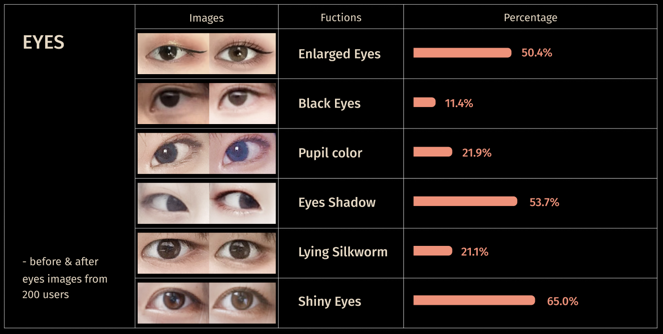
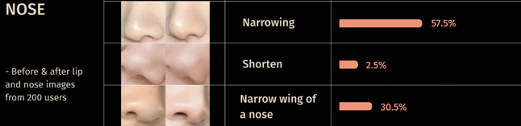
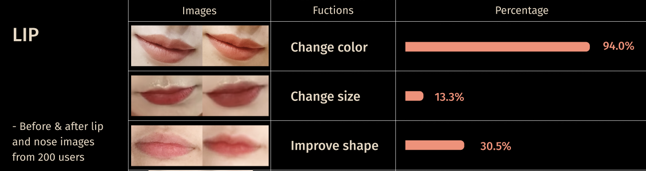
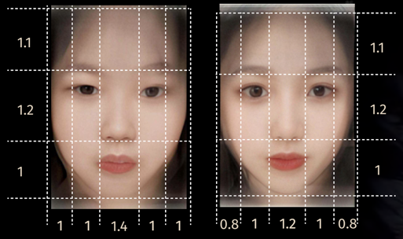

Editing pictures have become the habit of people before unloading pictures on social media. In China, Meitu has 300 millions of active users here. We collected 200 groups of before & after images by the queries of Body Editor. To compare the exact extent of changes, the before & after average faces are generated by computer. By comparing two average faces, the common characteristics can be found, the ideal virtual images of Meitu users can be summarized.
Eyes enlarging, eye shadow, eyeliner, and silkworm make eyes look bigger. Eyes are the place where Meitu users modify the most, and also with most available functions. In addition, remove dark circles can increase the contrast of eye colors. Bigger and brighter eyes are the main fashion of Meitu users. Over half of users would use the function of enlarge eyes and usually enlarged 43% of their eyes.
Meitu users are looking for a narrower and tall nose to improve the refinement of the face. Narrower and shorter nose makes the users look younger with a touch of the exotic in their appearance. After editing, nose is narrowed 11% on average.
With age, human lips become thinner. Meitu users tend to choose lips with clear outlines, perfect shapes, and plump lips. After Editing, users’ lips enlarged 33% than before. Plump pink lips are significant characteristic of young people. Lip color is changed frequently based on current trends.
The before faces have different arrangement of facial features. However, after editing, the facial features of the 200 pictures are highly overlapping. This proves that Meitu will adjust proportion of the face to make their distribution more standard. After editing, faces look similar and become more lack of recognition.
Aspects of facial contrast, a measure of how much facial features stand out in the face, decrease with age in women. Facial contrast refers to how much the eyes, lips and eyebrows stand out in the face in terms of how light or dark they are or how colorful they are. Several aspects of facial contrast decreased with age in all four groups of women, including contrast around the mouth and eyebrows. As the face ages, the color contrast gradually weakens, which is a cross-cultural perception. The editing photos have high saturation color compare to the before photos.
Natural and fresh makeup has been sought after in the past two years. According to the Meitu Report in 2019, users are looking for a bright, white but true-textured complexion and healthy-looking makeup. People have light-colored eyeshadow and lip color in the editing images. Natural is the new trend.
According to the analysis of facial proportions, the retouched face has a narrower nose and narrower cheeks, to achieve smaller visual effect. A smaller face implies a slim figure and a better figure ratio.
{kind=link}